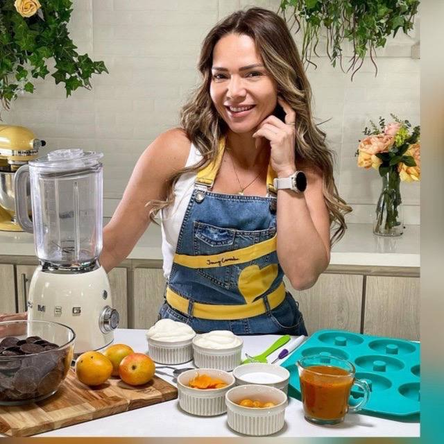

Un recetario saludable para preparar en casa opciones dulces, horneadas y prácticas que sí dan ganas de comer, compartir y repetir.
Más disfrute. Más variedad. Más posibilidades en casa.
No es una sola receta aislada. Es un conjunto de preparaciones reales para que el sin gluten se sienta más rico, más amplio y más posible en casa.
No solo aprenderás a cocinar para ti; aprenderás a poner un pan en la mesa que toda tu familia quiera comer, aunque ellos no tengan restricciones alimentarias.
Aquí la experiencia no gira alrededor de la carencia, sino del antojo, la variedad y el disfrute.
El placer de volver a comer un rol de canela caliente.
Incluye: Roles de canela · Pan relleno de chocolate · Donas.
Tu solución definitiva para sándwiches y desayunos.
Incluye: Pan maíz auyama · Pan nube · Pan mini · Pan molde · Pan yuca · Pan mogolla.
El sistema para no volver a aburrirte en la cocina.
Incluye: Cupcakes · Mini pizzas dulces · Galletas de zapallo · Batido de aguacate · Jugo verde · Arepa de zanahoria con chía.
Tienes 7 días para acceder al material y probar estas recetas en tu cocina. Si sientes que el pan no queda suave, que las opciones no son deliciosas o simplemente no es lo que esperabas, te devolvemos el 100% de tu dinero. Sin preguntas, sin riesgos.
"Pensé que nunca volvería a comerme un buen pan para el desayuno. Las recetas son súper fáciles de seguir y mi esposo (que no hace dieta) se las devora."
"Hice los roles de canela y no podía creer que no tuvieran gluten. Por fin puedo darle a mis hijos algo dulce sin culpa y sin que sepan a cartón."

Nací en Venezuela y desde chica descubrí mi amor por la cocina. Al mudarme a Colombia, enfrenté desafíos que fortalecieron mi enfoque: llevar salud a través de postres.
Me especialicé en pastelería saludable y, tras más de 10 años de experiencia, fundé Xocolat And More, con sedes en Colombia y Venezuela. Hoy es una cadena que demuestra que lo delicioso también puede ser nutritivo.
Pero esta misión también es personal. Mi papá vive con diabetes, mi hijo luchó con sobrepeso y yo misma enfrenté el cáncer de mama. Todo esto me dio una visión clara: comer bien puede cambiarte la vida.
Así nació este ebook: una guía práctica y poderosa para que más mujeres descubran que sí es posible crear postres saludables, deliciosos y sin frustración.
Hoy, juntas, estamos creando un movimiento de mujeres embajadoras de la cocina saludable. Mujeres que le decimos con orgullo sí es posible disfrutar sin culpa, cuidar nuestra salud y compartirlo con quienes amamos.
¡ESTOY LISTA PARA COCINAR SALUDABLE SIN FALLAR DESDE HOY!Sí, es un producto 100% digital en formato PDF. Recibirás el acceso a tu correo electrónico inmediatamente después de la compra para descargarlo y usarlo al instante.
¡El acceso es de por vida! Podrás consultarlo siempre que quieras, desde tu celular, tablet o computadora.
No, en absoluto. Las recetas están explicadas paso a paso de forma sencilla para que cualquier persona, sin importar su nivel en la cocina, pueda lograr resultados deliciosos.
Absolutamente. Utilizamos ingredientes accesibles que puedes encontrar en supermercados convencionales o tiendas naturales locales, sin complicarte la vida.
¡Es un recetario muy completo! Además de panes salados base, incluye opciones de panadería dulce (como donas y roles de canela), extras como galletas, y hasta opciones de desayunos rápidos y saludables.